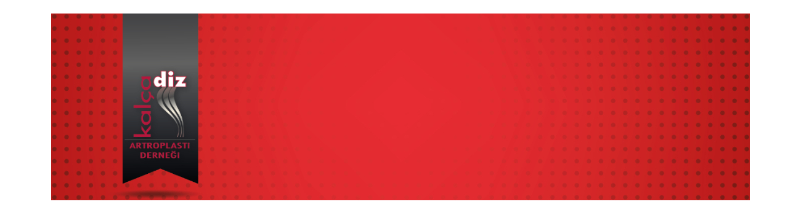

Değerli Meslektaşlarımız,
Kalça Diz Artroplasti Derneği eğitim faaliyetleri içerisinde yer alan "Webinar" oturumu 11 Haziran 2020, Perşembe günü saat 19:00'de gerçekleştirilecektir.
Prof. Dr. Hakkı Sur 'un sunacağı “Total Diz Protezinde Subvastus Yaklaşım”konulu webinar'a http://webinar.artroplasti.org.tr adresinden, bilgisayar ve mobil cihazlarınızla bağlanabilirsiniz.
Bu eğitim yılı içinde düzenlediğimiz diğer webinarlarımızın kayıtları, portalımız www.artroplasti.org.tr üzerinden dernek üyelerimizin erişimine sunulmuştur.
Saygılarımızla,

